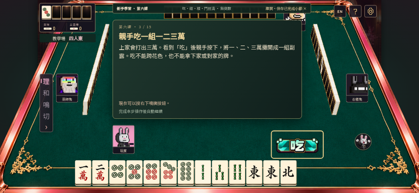
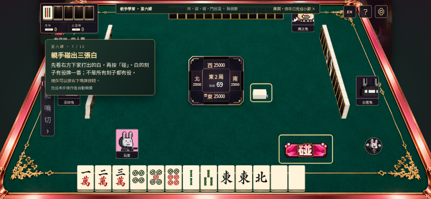
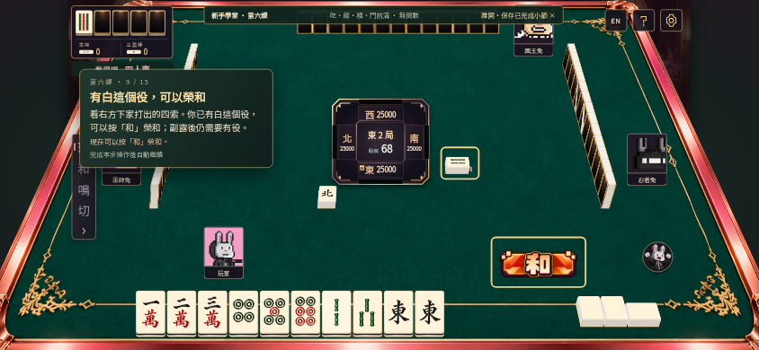
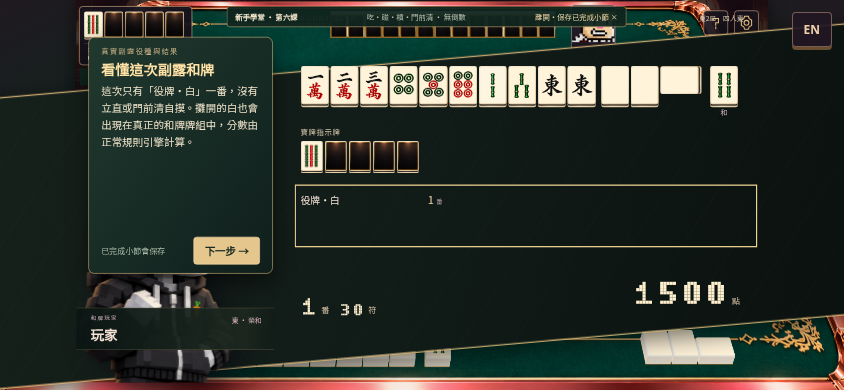
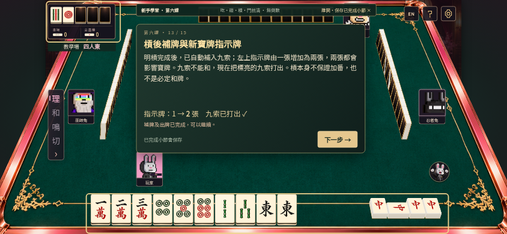

BUNNY ACADEMY · COURSE 06吃、碰、槓與門前清
三個固定教學例子，讓你親手鳴牌、出牌及榮和。提示卡按步驟放在左右側，中央牌河保持清楚，並直接框出對手打出的牌。
進入第六課 →01｜吃，只能接上家
用一二萬接上家的三萬，組成順子，再親手打出北。吃牌後不能立直；牌形完成仍要有役。

02｜碰白，再親手榮和
碰不限哪一家；這次碰白取得役牌，最後展示真正的一番結算。



03｜明槓、自動補牌與新指示牌
三張中接第四張中做明槓；自動補九索，指示牌由一張變兩張。暗槓仍保留門前清。

首次完成300本機體驗紅蘿蔔，不重複領取；第七課仍待開放。